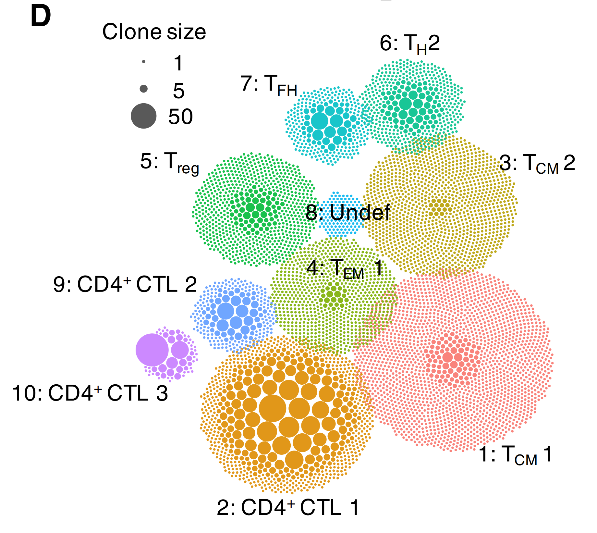

APackOfTheClones is an R package to produce “ball-packing” visualizations of the clonal expansion of T-cells in a Seurat object, based on its T-cell-receptor (TCR) library generated from the Cell Ranger output of 10X single-cell immune profiling.
The concept was first implemented in a study Ma et al.[1] by Murray Christian and Ben Murrell (@Murrellb) for nasal polyp TH cells. APackOfTheClones counts the clonotype frequencies for each seurat/umap cluster and produces a circle packing of the frequencies to intuitively represent clonal expansion. The packing for each cluster are then plotted with roughly the same coordinates as the original UMAP reduction and color. Below is an example of APackOfTheClones being used on a public 10X genomics dataset:

Installation
APackOfTheClones is registered on CRAN. To install the latest stable release, simply run the following
install.packages("APackOfTheClones")Alternatively, to download the latest development edition, run
library(devtools)
devtools::install_github("Qile0317/APackOfTheClones")If you also want the vignettes to be built locally, instead run:
devtools::install_github("Qile0317/APackOfTheClones", build_vignettes = TRUE)Usage
The main ball packing function clonal_expansion_plot in the package takes two main arguments: - a Seurat object with a UMAP reduction - a TCR library dataframe, from all_contig_annotations.csv generated by Cell Ranger
And integrates the TCR library into the seurat object metadata(creates a new temporary seurat object). It then will produce a ggplot of clusters of circles at roughly the same UMAP coordinates, where the circle size represents the clone size. An example to do so is shown below.
library(Seurat)
library(readr)
library(APackOfTheClones)
# run sc-RNAseq pipeline to produce a seurat_object
seurat_object <- RunUMAP(seurat_object)
TCR_dataframe <- read.csv("file_location/all_contig_annotations.csv")
# produce the ball-packing plot
ball_pack_plot <- clonal_expansion_plot(seurat_object, TCR_dataframe)
ball_pack_plotRun ?clonal_expansion_plot for more details and customization of the resulting plot with optional arguments, and error handling. It is also highly recommended to save the plot as an svg for use in publications.
In addition, integrate_tcr can just integrate the TCR V(D)J library into a seurat object metadata for further analyses:
TCR_dataframe <- read.csv("file_location/all_contig_annotations.csv")
integrated_seurat_object <- integrate_tcr(seurat_object, TCR_dataframe)
# or simply modify the current seurat object
seurat_object <- integrate_tcr(seurat_object, TCR_dataframe)
# The integrated seurat object can even be just passed to the clonal expansion plot without the TCR dataframe
ball_pack_plot <- clonal_expansion_plot(seurat_object)
ball_pack_plotThe function also takes care of multiple rows of data for the same cell barcode. Run ?integrate_tcr for more details.
Documentation
Comprehensive documentation, vignettes, and a changelog is deployed at https://qile0317.github.io/APackOfTheClones/
All exported functions has function level documentation which can be called with ?function. Additionally, as mentioned in the Installation section earlier, vignettes can also be built locally. Currently, there is only one vignette named "Clonal_expansion_plotting" which is a walkthrough on the clonal expansion visualization workflow. All vignettes can also be viewed online at https://qile0317.github.io/APackOfTheClones/articles/
Contributing
APackOfTheClones is currently incomplete, and more features, tests, bugfixes, and documentation are to come. However, pull requests from forked branches are more than welcome as it is mostly a solo-project at the moment. For major changes, please open an issue first to discuss what you would like to change. Please also make sure to update tests as appropriate.
An explanation of the algorithms will eventually be made publicly available in a either a pre-print or developer vignette.
Contact
Qile Yang - qile0317@gmail.com
References
[1] Ma, J., Tibbitt, C. A., Georén, S. K., Christian, M., Murrell, B., Cardell, L. O., Bachert, C., & Coquet, J. M. (2021). Single-cell analysis pinpoints distinct populations of cytotoxic CD4+ T cells and an IL-10+CD109+ TH2 cell population in nasal polyps. Science immunology, 6(62), eabg6356. https://doi.org/10.1126/sciimmunol.abg6356
[2] atakanekiz (2019) Tutorial:Integrating VDJ sequencing data with Seurat. https://www.biostars.org/p/384640/